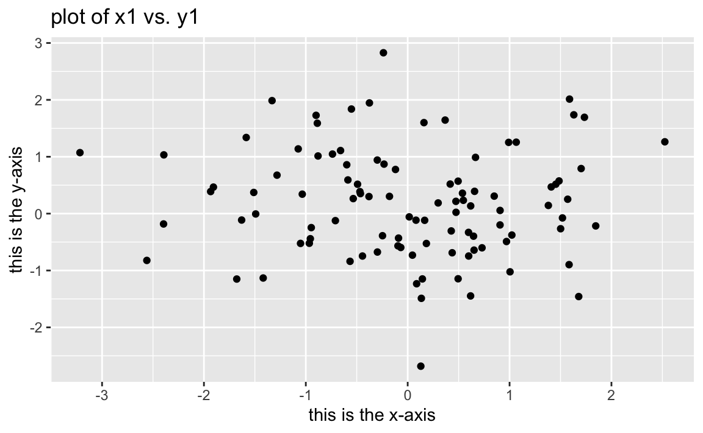

Chapter 2 Statistical Learning
2.1 Packages used in this chapter
library(tidyverse)
library(knitr)2.2 What is Statistical Learning?
Methods to estimate functions that connect inputs to outputs.
If there exists a quantitative response variable \(Y\) and \(p\) different predictors (\(X_1\), \(X_2\), …, \(X_p\)), we can write this relationship as:
2.2.1 Why Estimate \(f\)?
2.2.1.1 Prediction
We can predict Y using:
Accuracy of \(Y\) is dependant on:
- reducible error
- \(\hat{f}\) will never be perfect estimate of \(f\), and model can always be potentially improved
- Even if \(\hat{f} = f\), prediction would still have some error
- irreducible error
- Because \(Y\) is also a function of random \(ε\), there will always be variability
- We cannot reduce the error introduced by \(ε\)
2.2.1.2 Inference
How does \(Y\) respond to changes in \(X_1, X_2, ..., X_p\)?
2.2.2 How do we estimate \(f\)?
- Use training data to train method
- \(x_ij\) is value of \(j\)th predictor for observation \(i\), \(y_i\) is value of response variable
- \(i = 1, 2, ..., n\), \(j = 1, 2, ..., p\)
- Using training data, apply statistical learning method estimate unknown function \(f\)
- Most statistical learning methods can be characterized as either parametric or non-parametric
2.2.2.1 Parametric Methods
Two-step model-based approach:
- Make an assumption about functional form of \(f\), such as “\(f\) is linear in \(X\)”
- Perform procedure that uses training data to train the model * In case of linear model, this procedure estimates parameters \(β_0, β_1, ..., β_p\) * Most common approach to fit linear model is (ordinary) least squares
This is parametric, as it reduces the problem of estimating \(f\) down to one of estimating a set of parameters. Problems that can arise:
- Model will not match the true unknown form of \(f\)
- If model is made more flexible, which generally requires estimating a greater number of parameters, overfitting can occur
2.2.2.2 Non-parametric Methods
Non-parametric methods do not make assumptions about the form of \(f\). An advantage of this is that they have the potential to fit a wider range of possible shapes for \(f\). A disadvantage is that, because there are no assumptions about the form of \(f\), the problem of estimating \(f\) is not reduced to a set number of parameters. This means more observations are needed compared to a parametric approach to estimate \(f\) accurately.
2.2.3 The Trade-Off Between Prediction Accuracy and Model Interpretability
Restrictive models are much more intepretable than flexible ones. Flexible approaches can be so complicated that it is hard to understand how predictors affect the response.
If inference is the goal, simple and inflexible methods are easier to interpret. For prediction, accuracy is the biggest concern. However, flexible models are more prone to overfitting.
2.2.4 Supervised Versus Unsupervised Learning
Most machine learning methods can be split into supervised or unsupervised categories. Most of this textbook involves supervised learning methods, in which a model that captures the relationship between predictors and response measurements is fitted. The goal is to accurately predict the response variables for future observations, or to understand the relationship between the predictors and response.
Unsupervised learning takes place when we have a set of observations and a vector of measurements \(x_i\), but no response \(y_i\). We can examine the relationship between the variables or between the observations. A popular method of unsupervised learning is cluster analysis, in which observations are grouped into distinct groups based on their vector of measurements \(x_i\). An example of this would be a company segmenting survey respondents based on demographic data, in which the goal is to ascertain some idea about potential spending habits without possessing this data.
Clustering has some drawbacks. It works best when the groups are significantly distinct from each other. In reality, it is rare for data to exhibit this characteristic. There is often overlap between observations in different groups, and clustering will inevitably place a number of observations in the wrong groups. Further more, visualization of clusters breaks down as the dimensionality of data increases. Most data contains at least several, if not dozens, of variables.
It is not always clear-cut whether a problem should be handled with supervised or unsupervised learning. There are some scenarios where only a subset of the observations have response measurements. This is a semi-supervised learning problem, in which a statistical learning method that can utilize all observations is needed.
2.2.5 Regression Versus Classification Problems
Variables can be categorized as either quantitative or qualitative. Both qualitative and quantatitive predictors can be used to predict both types of response variables. The more important part of choosing an appropriate statistical learning method is the type of the response variable.
2.3 Assessing Model Accuracy
Every data set is different and there is no one statistical learning method that works best for all data sets. It is important for any given data set to find the statistical learning method that produces the best results. This section presents some concepts that are part of that decision-making process.
2.3.1 Measuring the Quality of Fit
We need to be able to quantify how well a model’s predictions match the observed data. How close are the model’s predicted response values to the true response values?
In regression, mean squared error (MSE) is the most commonly-used measure. A small MSE indicates the predicted responses are very close to the true ones. MSE used on training data is more accurately referred to as the training MSE.
We are most concerned with the accuracy of the predictions when we apply our methods to previously unseen data. If you are trying to predict the value of a stock, your concern is how it performs in the future, not on known data from the past. Thus, the goal is then minimizing the test MSE, which measures the accuracy of a model on observations that were not used to train the model. Imagine a set of observations \((x_0, y_0)\) that were not used to train the statistical learning method.
The goal is to select the model that minimizes the test MSE shown above. How can we do this?
Sometimes, there is an available test data set full of observations that were not used in training the model. The test MSE can be evaluated on these observations, and the learning method which produces the smallest TSE will be chosen. If no test observations are available, picking the method that minimizes the training MSE might seem to be a good idea. However, there is no guarantee that a model with the lowest training MSE also has the lowest test MSE. Models often work in minimizing the training MSE, and can end up with large test MSE.
There is a tradeoff in model flexibility, training MSE, and test MSE. A model that is too flexible can closely match the training data, but perform poorly on the test data. There is a sweet spot to find between model flexibility, training MSE, and test MSE that varies for each unique data set.
Degrees of freedom is a quantity that summarizes the flexibility of a curve, discused more fully in Chapter 7. The more inflexible a model is, the fewer degrees of freedom.
As model flexibility increases, training MSE will inevitably decrease, but test MSE may plateau or even rise. A model with a small training MSE and large test MSE is overfitting the data, picking up patterns on the training data that don’t exist in the test data. Since we expect the training MSE to almost always be lower than the test MSE, overfitting is a specific case when there exists a less flexible model with a smaller test MSE.
2.3.2 The Bias-Variance Trade-Off
The expected test MSE can be broken down into the sum of three quantities:
- the variance of \(\hat{f}(x_0)\)
- the squared bias of \(\hat{f}(x_0)\)
- the variance of the error terms ε
The formula above defines the expected test MSE, which can be thought of the average test MSE that would be obtained if we repeatedly estimated \(f\) and tested each at \(x_0\). To minimize expected test MSE, we need to choose a statistical learning method that achieves both low variance and low bias. Since variance and squared bias are nonnegative, the expected test MSE can never be lower than \(Var(ε)\), the irreducible error.
Variance refers to how much \(\hat{f}\) would change if repeatedly estimated with different training data sets. Methods with high variance can produce large changes in \(\hat{f}\) through small changes in the training data. Generally, the more flexible a model it is, the higher the variance. Following the observations so closely can cause changes in just a single observation of the training data to result in significant changes to \(\hat{f}\). More inflexible models, such as linear regression, are less susceptible to the effects of changing a single observation.
Bias is the error introduced from approximating a complicated problem by a much simpler model. Fitting a linear regression to data that is not linear will always lead to high bias, no matter how many observations are in the training set. More flexible models tend to result in less bias.
More flexible methods lead to higher variance and lower bias. The rate of change between the quantities determines at which point the test MSE is minimized. Bias tends to decrease at a faster rate in the beginning, causing the test MSE to decline. However, when flexibility reaches a certain point, variance will begin to increase faster than bias is decreasing, causing test MSE to rise.
This relationship between bias, variance, and test MSE is known as the bias-variance tradeoff. Here is a good article on it: Understanding the Bias-Variance Tradeoff
In real-life scenarios where \(f\) is unknown, we cannot explicitly compute the test MSE, bias, or variance. However, there are methods to estimate this, such as cross-validation, which will be discussed in Chapter 5.
2.3.3 The Classification Setting
For classification problems where \(y_i,...,y_n\) are qualitative, we can quantify the accuracy of our estimate by using the training error rate, the proportion of mistakes that are made when applying our model \(\hat{f}\) to the training observations.
\(1/n\sum_{i=1}^nI(y_i \neq \hat{y_i})\)
training error rate
Breaking the formula above down.
- \(\hat{y}_i\) is the predicted class label for the \(i\)th observation using \(\hat{f}\)
- \(I(y_i \neq \hat{y_i})\) is an indicator variable that equals 1 if \(y_i \neq \hat{y_i}\), and 0 if \(y_i = \hat{y_i}\)
- If \(I(y_i \neq \hat{y_i})\) = 0, then the \(i\)th observation was classified correctly
Similar to our regression problems, we are more interested in the model’s performance on test observations not used in training. The formula below gives us the test error rate for a set of observations of the form \((x_0, y_0)\).
\(Ave(I(y_0 \neq \hat{y_0}))\)
test error rate
A good classifier will minimize the above.
2.3.3.1 The Bayes Classifier
The test error rate is minimized by the classifier that assigns each observation to the most likely class, given its predictor values. Our decision is then based on finding the value at which the formula below is largest.
\(Pr(Y = j|X = x_0)\)
If the response values are binomial (let’s call them A and B) the classifier simplifies to:
\(Pr(Y = A|X = x_0) > 0.5\:then\:A,\:else\:B\)
The Bayes decision boundary is the point where the probabilities are equal for both groups. Points on either side of this line are assigned to the group predicted by the classifier. The Bayes error rate averaged over all possible values of \(X\) is below.
\(1-E(max_jPr(Y = j|X))\)
Bayes error rate
The Bayes error rate is often greater than zero, as observations between classes overlap in real-world data.
2.3.3.2 K-Nearest Neighbors
Since the true conditional distribution of \(Y\) given \(X\) cannot be known in real data, the Bayes classifier is used as a “gold standard” to compare other models to. Many methods attempt to estimate this conditional distribution, and then classify an observation based on the estimated probability. A common method is K-nearest neighbors (KNN). Given a positive integer \(K\) and a test observation \(x_0\), KNN then does the following:
- identifies the \(K\) points in the training data that are closest to \(x_0\), represented by \(N_0\)
- estimates conditional probability for class \(j\) as the fraction of the points in \(N_0\) whose response values equal \(j\):
\(Pr(Y = j| X = x_0) = 1/K\sum_{i\in N_0}I(y_i = j)\)
- applies Bayes rule and classifies test observation \(x_0\) to class with largest probability
KNN can be surprisingly robust to the optimal Bayes classifier. The choice in \(K\) makes a huge difference. For example, a \(K\) = 1 is highly flexible, classifying observations based off of the closest nearby training observation. \(K\) = 100 would do the opposite, basing its classification off a large pool of training observations compared to the \(K\) = 1 version. The higher \(K\) value produces a more linear model. The trade-off between flexibility, training error rate, and test error rate applies to both classification and regression problems.
2.4 Lab: Introduction to R
Finally we get to some R code. This chapter of ISLR introduces basic R syntax, and most of it is unchanged in my version. This should all be familiar to anyone who has used R before.
We are going to be working with tibbles as our primary data structure throughout this book. Please read here: tibbles
2.4.0.1 Basic Commands
Skipping this.
2.4.0.2 Graphics (Plotting)
Here we begin to explore the “tidy” approach to R. We will abstain from base R plotting and use ggplot2, which is a more powerful tool. Let’s plot a scatterplot with some basic labels.
tbl_rnorm <- tibble(
x1 = rnorm(100),
y1 = rnorm(100)
)
ggplot(tbl_rnorm, aes(x = x1, y = y1)) +
geom_point() +
labs(title = "plot of x1 vs. y1",
x = "this is the x-axis",
y = "this is the y-axis")
2.4.0.3 Indexing data
We will skip this.
2.4.0.4 Loading data
ISLR mentions insuring proper working directory before loading data. Dealing with working directories in R is a bad idea. Fortunately, it’s easily avoidable through the use of RStudio projects, which keep all files used in analysis together and make your work more robust and reproducible. See the RStudio Projects chapter in r4ds for more information.
We will opt for the readr (part of the tidyverse) package instead of base R. Take a look at this subsection of r4ds for reasons why:
11.2.1 Compared to base R
Below is a reproducible example in which we create a tibble, save it as a .txt file, and then read it in with write_tsv(). The set of read_* functions in readr will be the standrad way to read local files into R. If you are using RStudio projects, there is no need to worry about working directories.
# generate dummy data to read in
generic_company_tibble <- tibble(
x = rnorm(100, mean = 25),
y = rnorm(100, mean = 50),
z = sample(c("apple", "uber", "facebook", "twitter", "tesla", "google", "microsoft"), 1)
)
tmp <- tempfile()
write_tsv(generic_company_tibble, tmp)
company_data <- read_tsv(tmp)readr provides a nice summary of the imported tibble. Calling the tibble by name will also give a breakdown of column names, data types, and number of observations.
company_data## # A tibble: 100 x 3
## x y z
## <dbl> <dbl> <chr>
## 1 25.6 50.2 microsoft
## 2 25.8 49.9 microsoft
## 3 25.9 49.6 microsoft
## 4 26.3 48.1 microsoft
## 5 25.7 51.0 microsoft
## 6 24.1 50.2 microsoft
## # … with 94 more rows2.4.0.5 Additional Graphical and Numerical Summaries
ISLR mentions the attach() function, which allows R to reference column names of dataframes without specifying the dataframe. attach can lead to confusion and errors when working on a project with multiple sources of data. This is a bad practice, and should always be avoided.
The book then goes into some explanation of plot(), which we will not be using.
2.5 Exercises
- For each of parts (a) through (d), indicate whether we would generally expect the performance of a flexible statistical learning method to be better or worse than an inflexible method.
- The sample size n is extremely large, and the number of predictors p is small
- (better) given large sample size, a flexible model would be able to capture a trend without being influenced too heavily by a small number of observations.
- The number of predictors p is extremely large, and the number of observations n is small.
- (worse) given the small sample size, an inflexible model would do better at not overfitting to a small number of observations (capturing patterns in the training data that dont really exist)
- The relationship between the predictors and response is highly non-linear.
- (better) highly flexible methods are highly non-linear and can produce better fits on non-linear data compared to inflexible methods such as linear regression
- The variance of the error terms, i.e. σ2 = Var(ε), is extremely high.
- (worse) given the high variance in the data, an inflexible method would overfit to the noise
- The sample size n is extremely large, and the number of predictors p is small
- Explain whether each scenario is a classification or regression problem, and indicate whether we are most interested in inference or prediction. Finally, provide n and p.
- We collect a set of data on the top 500 firms in the US. For each firm we record profit, number of employees, industry and the CEO salary. We are interested in understanding which factors affect CEO salary.
- (regression; inference) This is a regression problem with both qualitative and quantitative predictors. Inference is the main goal, as the company probably wants a model that is human-readable in order to understand what determines a CEO’s salary.
n = 500, p = 3
- (regression; inference) This is a regression problem with both qualitative and quantitative predictors. Inference is the main goal, as the company probably wants a model that is human-readable in order to understand what determines a CEO’s salary.
- We are considering launching a new product and wish to know whether it will be a success or a failure. We collect data on 20 similar products that were previously launched. For each product we have recorded whether it was a success or failure, price charged for the product, marketing budget, competition price, and ten other variables.
- (classification; prediction) The goal is to classify whether a product will be a success or failure. Prediction is the goal, as they want to accurately determine if their product will succeed or fail.
n = 20, p = 4
- (classification; prediction) The goal is to classify whether a product will be a success or failure. Prediction is the goal, as they want to accurately determine if their product will succeed or fail.
- We are interested in predicting the % change in the USD/Euro exchange rate in relation to the weekly changes in the world stock markets. Hence we collect weekly data for all of 2012. For each week we record the % change in the USD/Euro, the % change in the US market, the % change in the British market, and the % change in the German market.
- (regression; prediction) The goal is to predict the % change of the exchange rate.
- We now revisit the bias-variance decomposition
- Provide a sketch of typical (squared) bias, variance, training error, test error, and Bayes (or irreducible) error curves, on a single plot, as we go from less flexible statistical learning methods towards more flexible approaches. The x-axis should represent the amount of flexibility in the method, and the y-axis should represent the values for each curve. There should be five curves. Make sure to label each one.
bias_variance <- tibble(
flexibility = c(1:5),
bias = c(300,200,150,100,50),
variance = c(0,25,125,250,500),
train_error = c(350,250,200, 125, 50),
irreducible_error = 100,
test_error = variance + bias + irreducible_error) %>%
gather(`bias`, `variance`, `train_error`, `irreducible_error`, `test_error`,
key = "measurement", value = "value")
ggplot(bias_variance, aes(x = flexibility, y = value, colour = measurement)) +
geom_smooth(se = FALSE, method = "lm", formula = y ~ poly(x,3)) +
theme_minimal()- You will now think of some real-life applications for statistical learning.
- Describe three real-life applications in which classification might be useful. Describe the response, as well as the predictors. Is the goal of each application inference or prediction? Explain your answer.
- predicting diabetes.
- response: future diabetes
- predictors: health and body measurements of patient
- goal: prediction, model complexity and human understanding is not important
- demographics that determine future education level
- response: education level
- predictors: demographic data
- goal: inference, prediction is important here too but researchers would probably want to understand and share which factors determine the response in order to raise awareness
- faulty parts in manufacturing
- response: whether or not part is faulty
- predictors: various tests on part
- goal: prediction, it is most important to have an accurate model, especially if faulty parts can lead to deaths
- predicting diabetes.
- Describe three real-life applications in which regression might be useful. Describe the response, as well as the predictors. Is the goal of each application inference or prediction? Explain your answer.
- number of riders on public transit over time
- response: how many riders are expected to use public transit
- predictors: current transit usage data, local population data, etc.
- goal: prediction, it is important to prepare for growth in transit usage so governments have enough time to make necessary changes
- demand for product
- response: how many units to expect to be sold
- predictors: current demand data, revenue growth, business expansion, changing in market trends, economy health
- goal: prediction, figure out in X amount of time demand for product in order to upsize/downsize to appropriate level
- determine future salary
- response: future expeceted salary
- predictors: employment history, education, geolocation, etc.
- goal: inference, researchers might want to know the most important factors that lead to higher salaries rather than a model that is too complex to understand
- number of riders on public transit over time
- Describe three real-life applications in which classification might be useful. Describe the response, as well as the predictors. Is the goal of each application inference or prediction? Explain your answer.
- What are the advantages and disadvantages of a very flexible (versus a less flexible) approach for regression or classification? Under what circumstances might a more flexible approach be preferred to a less flexible approach? When might a less flexible approach be preferred?
- Very flexible approach allows you to fit a more flexible function to the data. The advantage is that you have the potential to accurately predict data even as it moves away from linearity. The disadvantage are potential overfitting to the training data, increasing variance (individual observations affect the model to higher degree than non-flexible counterpart), and higher computational costs (as well as less human-readable explanations)
- When a more flexible approach is preferred: data that is non-linear, large sample size, prediction more important than inference
- When a less flexible approach is preferred: data that is more linear, smaller sample size, inference more important than prediction
- Describe the differences between a parametric and a non-parametric statistical learning approach. What are the advantages of a parametric approach to regression or classification (as opposed to a nonparametric approach)? What are its disadvantages?
- A parametric approach assumes a form of \(f\) and has to estimate an often known number of parameters (for example, linear regression simply requires estimating \(p+1\) coefficients)
- A non-parametric approach makes no assumptions about the true form of \(f\). They simply want to get as close as possible to \(f\). This allows them to take on a larger variety of shapes, and accomodate a larger variety of patterns.
- Advantages of a parametric approach are that they take less observations to generate (the problem is reduced to applying a known form to \(f\), such as linear regression), are less inclined to overfit, and generally less computationally intensive.
- Disadvantages of a parametric approach making assumptions about the form of \(f\), which may not match the real form and could lead to a model that doesn’t fit the data well
- The table below provides a training data set containing six observa- tions, three predictors, and one qualitative response variable.
training_set <- tibble(
x1 = c(0,2,0,0,-1,1),
x2 = c(3,0,1,1,0,1),
x3 = c(0,0,3,2,1,1),
y = c("red","red","red","green","green","red"))
kable(training_set)| x1 | x2 | x3 | y |
|---|---|---|---|
| 0 | 3 | 0 | red |
| 2 | 0 | 0 | red |
| 0 | 1 | 3 | red |
| 0 | 1 | 2 | green |
| -1 | 0 | 1 | green |
| 1 | 1 | 1 | red |
Suppose we wish to use this data set to make a prediction for \(Y\) when \(X1 = X2 = X3 = 0\) using K-nearest neighbors.
- Compute the Euclidean distance between each observation and the test point, \(X1 = X2 = X3 = 0\).
The Euclidean Distance for three dimensions can be written as:
Let’s write a function that can handle this in R, then use the rowwise() feature of dplyr to apply it across the rows of our tibble.
euc_dist <- function(x1, x2) sqrt(sum((x1 - x2) ^ 2))
training_set <- training_set %>%
rowwise() %>%
mutate(distance = euc_dist(c(x1,x2,x3), c(0,0,0))) %>%
ungroup()
kable(training_set)| x1 | x2 | x3 | y | distance |
|---|---|---|---|---|
| 0 | 3 | 0 | red | 3.000000 |
| 2 | 0 | 0 | red | 2.000000 |
| 0 | 1 | 3 | red | 3.162278 |
| 0 | 1 | 2 | green | 2.236068 |
| -1 | 0 | 1 | green | 1.414214 |
| 1 | 1 | 1 | red | 1.732051 |
- What is our prediction with K = 1? Why?
Let’s find the y value of the single closest (k = 1) training observation.
training_set %>%
filter(distance == min(distance)) %>%
select(y) %>%
pull()## [1] "green"Since the closest observation in the training data is green, K = 1 classifies our test observation as green.
- What is our prediction with K = 3? Why?
First we find the three closest values. Then we measure the breakdown of y responses in this group of three observations. We find that two observations have value of red, and one has green. Given red has the highest probability of the two y values, we assign the training observation as red.
training_set %>%
top_n(3, -distance) %>%
mutate(n = n()) %>%
group_by(y) %>%
summarise(prop = n()/max(n)) %>%
filter(prop == max(prop)) %>%
pull(y)## [1] "red"- If Bayes decision boundary is highly non-linear, then do we expect the best value of \(K\) to be large or small? Why? - We expect the value of \(K\) to decline as the decision boundary grows more non-linear. A smaller value of \(K\) is more suspectible to small changes between observations, which is the type of pattern highly non-linear decision boundary would depict.
The R exercises are pretty basic after this. I am going to skip them for now.